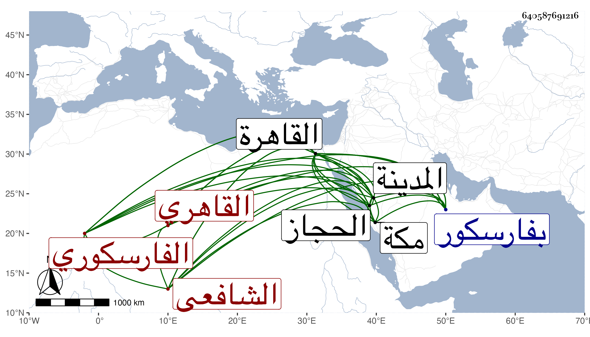

0902Sakhawi.DawLamic.ITO20230111-ara1.EIS1600.640587691216
Biography ID: 640587691216
281
عبد الرحمن بن علي بن خلف الزين أبو المعالي الفارسكوري ثم القاهري الشافعي ، ولد سنة خمس وخمسين وسبعمائة بفارسكور ، وقدم القاهرة وتفقه بالجمال الاسنائي ثم بالبلقيني وآخرين وسمع الحديث فأكثر وكتب بخطه المليح كثيرا وارتقى في الفقه وأصوله والعربية وغيرها وتقدم في العربية وعمل شرحا على شرح العمدة لابن دقيق العيد في مجلدات جمع فيه أشياء حسنة ولكنه عدم وقفت على كراريس منه وفيه تحقيق ومتانة ويستمد فيه من البلقيني كثيرا ولذا استعارها مني ولده العلم البلقيني فضاعت في تركته وتألمت لها كثيرا ورأيت بعض كراريس بغير خطه وفيه تبليغ بخطه لفتح الدين الباهي الحنبلي بالقراءة وكان ذا حظ من العبادة والمروءة والسعي في حوائج الغرباء خصوصا أهل الحجاز ، وقد ولي قضاء المدينة النبوية بعد الشهاب السلاوي ولم يتهيأ له مباشرته فانه لما استقر ناب عنه القاضي ناصر الدين أبو الفرج عبد الرحمن بن محمد بن صالح ثم لم يلبث أن عزل به قبل توجهه اليها وكذا استقر سنة ثلاث وثمانمائة في تدريس المنصورية بعد الصدر المناوي وفي نظر الظاهرية القديمة ودرسها فعمرها أحسن عمارة وحمدت مباشرته وجاور بمكة وصنف بها شيئا في مقام إبراهيم ، قال شيخنا وكنت أوده ويودني وسمعت بقراءته وسمع بقراءتي ، ومات بالقاهرة في رجب سنة ثمان عن ثلاث وخمسين سنة وأسفت عليه جدا ، وسئل في مرض موته أن ينزل عن بعض وظائفه لبعض من يحبه من رفقته فقال لا أتقلدها حيا وميتا وذكره المقريزي في عقوده .
